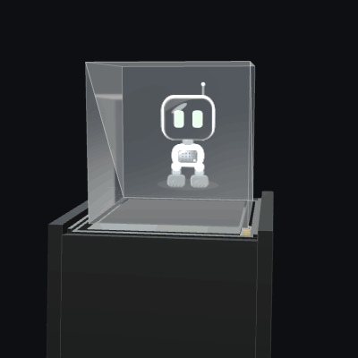

Sage on the desk
Sage is the robot that lives on destbreso.com. This is its body on my desk: a small glass prism display that reacts to my work with Claude Code.
Everything here runs in your browser, the same way the board runs it. No install, no account.
Open the device, live in 3D
Try it
- The device, live in 3DSage in its prism, playing the frames the board plays. Turn it, click it to tap it, and type it commands.
- The bare boardThe same board seen square from the front, its picture exactly as the firmware draws it.
- The hardware, taken apartEvery part at its real size, down to the layers of the display. Click one to see what it is.
- Every mood and actPick any of Sage's moods and acts and watch it play.
- How a moment reaches the glassA quarter of an hour of my work, simulated, from a Claude Code hook to the board. Put the Mac to sleep and watch.